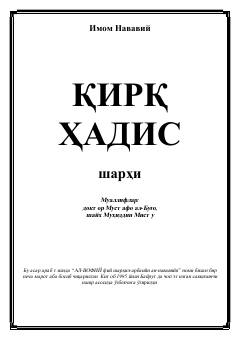

QHImom Navaviyning qirq hadisi o'zbek tilida sharh bilan.
Bu kitob Imom Navaviyning mashhur 'Arbaʼin' (Qirq hadis) asarining o'zbekcha sharhi bo'lib, doktor Mustafa al-Bug'o va shayx Muhiddin Mistu tomonidan yozilgan. Asar arabcha 'Al-Vofiy fiy sharhil-arbaʼiyn an-navaviyya' nomi bilan nashr etilgan va 1995 yilda Bayrut nashri asosida o'zbekchaga tarjima qilingan. Kitobda Islom, imon, ehson, halol-harom, axloq va boshqa muhim diniy mavzularga oid 42 hadis sharhlangan.